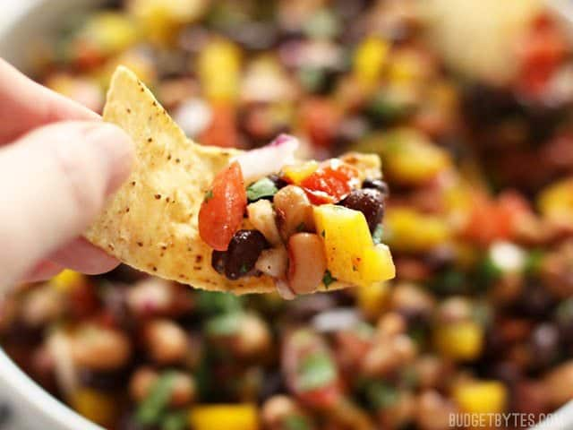

Cowboy Caviar

Description
Cowboy Caviar is like a cross between a bean salad and fresh salsa with its colorful mix of beans, vegetables, and a fresh lime infused dressing.
Ingredients
- 1 15oz. can black beans ($0.89)
- 1 15oz. can black eyed peas ($1.09)
- 1 bell pepper (any color) ($1.50)
- 2 Roma tomatoes ($0.86)
- 1 jalapeño ($0.12)
- 1/4 red onion ($0.20)
- 1/4 bunch fresh cilantro ($0.20)
Dressing
- 2 Tbsp olive oil
- 1 fresh lime (2 Tbsp juice) ($0.33)
- 1/2 Tbsp balsamic vinegar ($0.10)
- 1/2 tsp chili powder* ($0.05)
- 1 tsp ground cumin ($0.10)
- 1/2 tsp salt ($0.02)
- 1/2 tsp sugar ($0.02)
Steps
- Rinse and drain both cans of beans in a colander. Let the excess water drain as you prepare the vegetables.
- Finely dice the bell pepper, tomatoes, jalapeño, and red onion. Try to dice the vegetables into pieces that are roughly the same size as the beans. For a less spicy salad, scrape the seeds out of the jalapeño before dicing. Roughly chop the cilantro. Place the drained beans, bell pepper, tomatoes, jalapeño, onion, and cilantro in a large bowl.
- In a small bowl, whisk together the olive oil, 2 Tbsp of juice from the lime, balsamic vinegar, chili powder, cumin, salt, and sugar. Pour the dressing over the salad, then stir until everything is well coated. Serve immediately, or refrigerate until ready to eat.